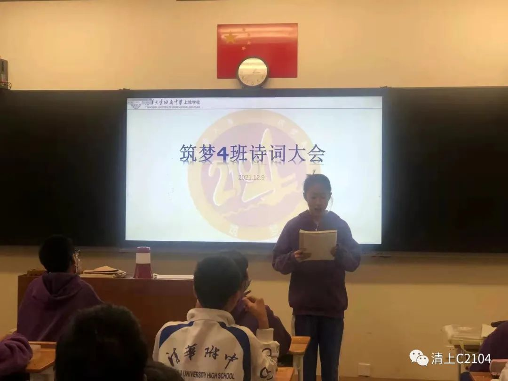
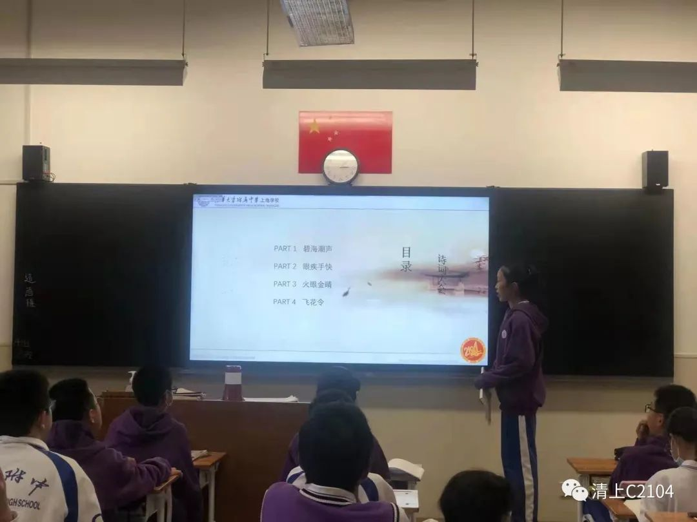
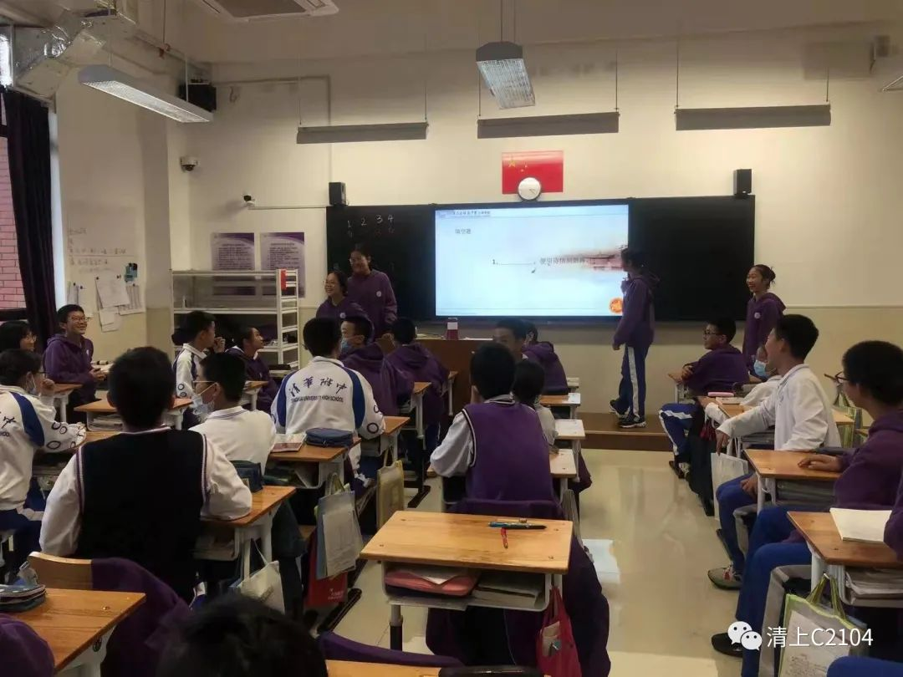
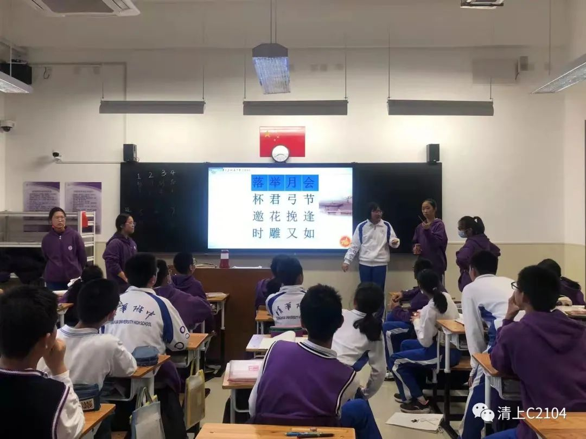
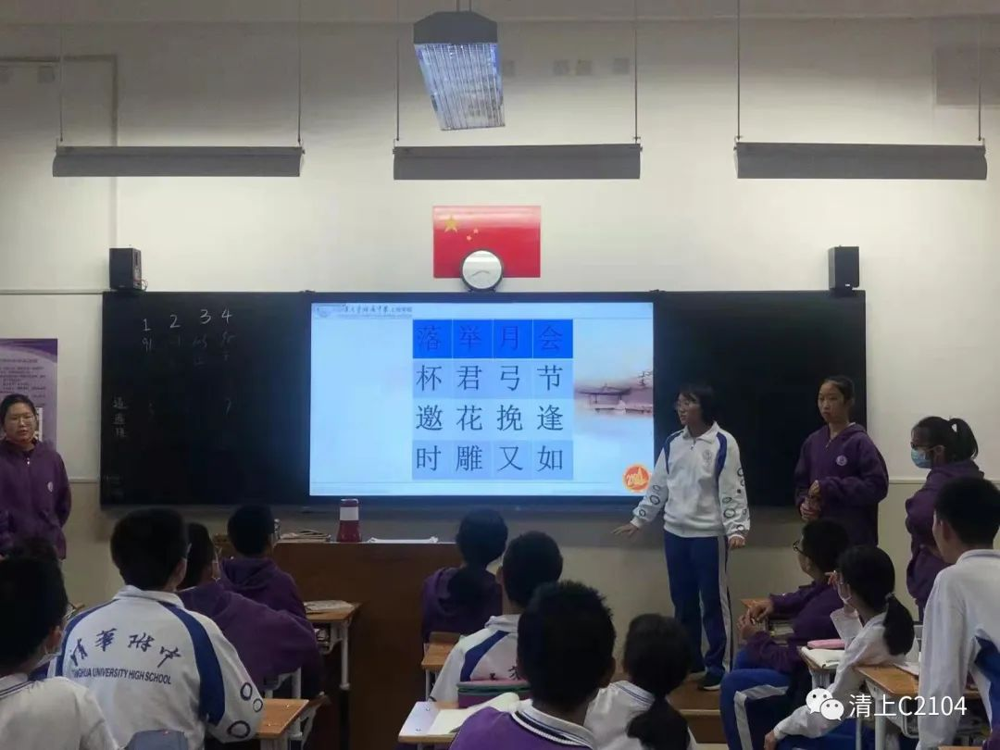
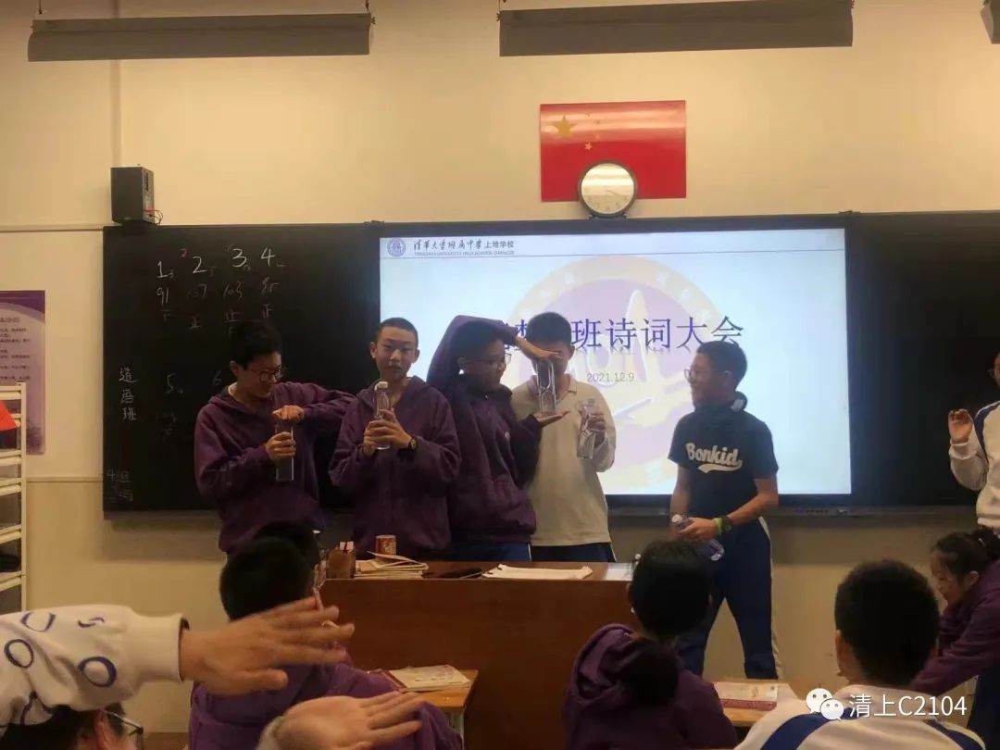
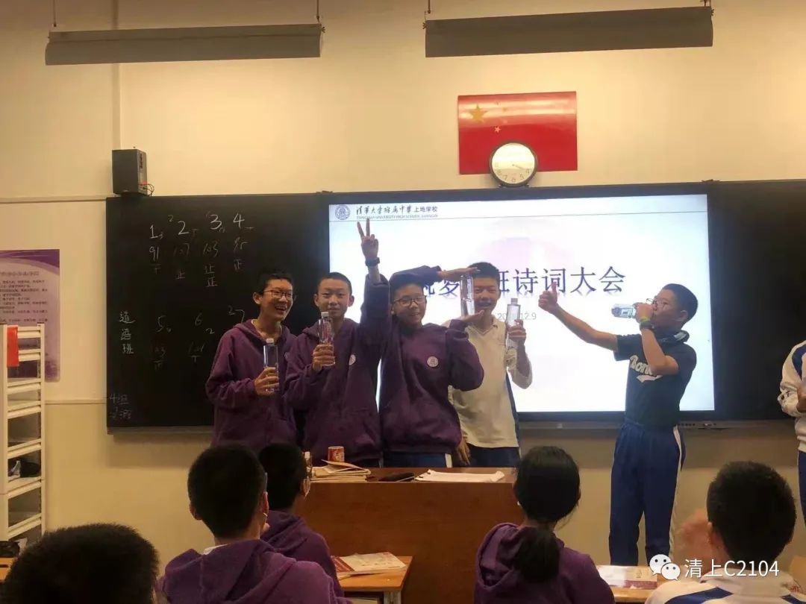
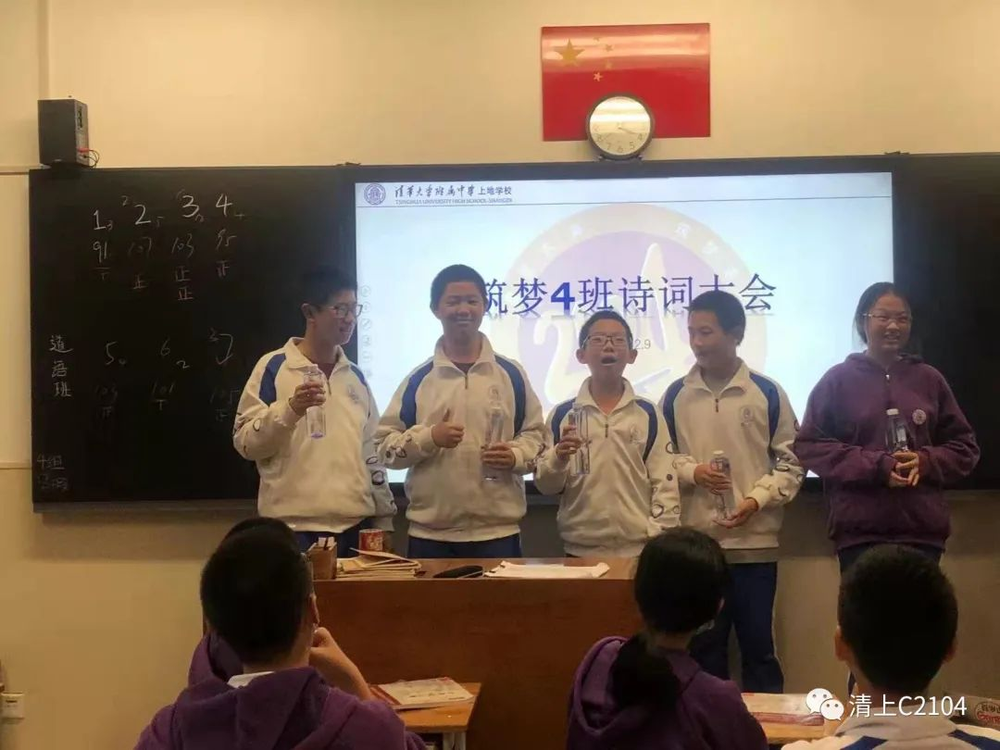
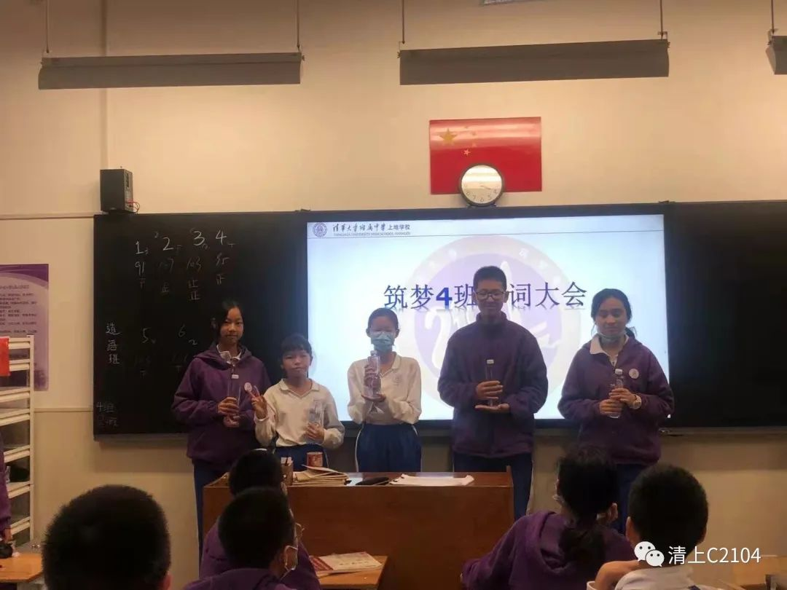

前言：诗的言语，典藏着华夏五千年的悠悠历史；
词的声音，演绎着贯穿古今的不朽传说；
经典诗词，吟咏着底蕴深厚的民族文化；
诗词经典，见证着炎黄子孙的风骨铿锵！
中华五千年文化是我们生生不息的脉搏；中华五千年历史是我们坚定不移的步履。中华民族优秀的传统文化，凝聚着古圣睿智的目光，蕴藉着先贤越人的思想。而唐诗宋词，则是中华民族最深厚的文化底蕴。
在诗词中，我们学习“竹杖芒鞋轻胜马，谁怕？一蓑烟雨任平生”的乐天豁达；学习“昨夜雨疏风骤，浓睡不消残酒”的婉约浪漫；学习“夜阑卧听风吹雨，铁马冰河入梦来”的忧国忧民；学习“俱往矣，数风流人物，还看今朝”的雄心壮志……
为丰富班级文化生活，弘扬中华优秀传统文化，将文明根植于菁菁校园，将经典播向求知若渴的心田，让我们能够在古韵芳华中传承文明、提高修养，收获快乐、感悟成长，12月9日，筑梦四班举办了第一届诗词大会！
“碧海潮声”：这个游戏考验了同学们的古诗词积累和声音大小，在这个环节中，同学们的声音此起彼伏，每位同学都不甘示弱，充分展示了大家日常古诗词的积累。我希望大家将参加比赛的热情转化为源源不竭的动力，用知识开启梦想的大门，梦起学习，梦圆中国，激扬文字旋日月，大展宏图转乾坤!——唐锦心
“眼疾手快”：“眼疾手快”考验了同学们对古诗词的熟悉度和“手速”。大家在这个环节中积极踊跃，在游戏中不知不觉就把这些难点和易错点掌握了，在一种既快乐又紧张的氛围中学习语文，感受语言的魅力。我们玩中学，学中玩！——张桐语
“火眼金睛”：我主持的环节是“火眼金睛”，这个游戏需在15秒内从给出16个汉字里提取一句7字古诗。不仅考验同学古诗词的积累量，还考验掌握熟练程度以及反应能力。同学们踊跃回答，根本难不倒他们，我也惊叹同学们的古诗知识如此丰富。在同学们的妙语连珠中，我主持的部分很快就结束了，同学们意犹未尽，还荡漾在古诗的海洋中。这次诗词大会不仅丰富了我的学识，更锻炼了我的主持能力。也知道了自己的差距，伴随这次的诗词大会，梦想就此起航。愿我们以梦为马，不负韶华。——赵可舟
 “飞花令”：这次诗词大会中，我主持的游戏是飞花令。这个游戏主要考验大家对古诗词的积累。活动形式是七个组每个组派出一个代表，七个组的代表轮流说出与主题字有关的诗句，如果说不出来就会被自动淘汰，且每个组说的诗句不能重复。这个活动的亮点在于还原了真正的诗词大会中的飞花令，并且考验了同学们的临场发挥能力，和对古诗词的积累。——解欣航
“击鼓传花”：我主持的游戏是击鼓传花，这个游戏不但考验了同学们的古诗词积累，传出了一种团结一致、激扬向上的精神，一种相互激励、相互竞争的风气，一种敢为人先、虽败犹荣的意志，一种虚怀大度、君子坦荡荡的品质。在游戏的同时考验大家的古诗词积累量，发扬中华精神，才是这个游戏的初衷。——张梓洋
这次的诗词大会的亮点在于游戏的多样性和不少同学的惊艳发挥。这次多样性的游戏收获了不少同学的好评，最后的大礼“长命大礼包”更是激发了不少同学的好奇，也让大家玩中学，学中玩，在游戏的趣味中感受中华诗词之美。而不少同学的发挥更是惊艳全场，出口便是脍炙人口的名篇佳句，为此次诗词大会又增添了几分诗风词韵。
在本次诗词大会中，有三个组的同学在众人间脱颖而出，他们分别是：郑涵月、连雨缪、邓和祺、刘志祥、李知微、姚思成、张鸿昇、夏梓航、周子博、陈知萱、金皓、丁齐扬、王诗焜、王振宇和郑伟斌十五位同学，在这里对各位提出表扬，也衷心祝贺这些同学们！
   结束语：诗词风韵，悠久绵长，跨越历史之长河；华夏文化，诗词歌赋，传承文化之底蕴！
投稿：唐锦心，赵可舟，朵兰娜，赵雨芊，张桐语，解欣航，张梓洋 编辑：赵雨芊 排版：连雨缪 审核：安珂